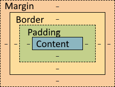

Op deze website ga je oefenen met het box model. Probeer eerst de voorbeeldvraag te maken: breedte en hoogte zijn 250px, de margin is 10px, de padding is 5px en de border is 10px. Kijk wat er gebeurt als je deze waarden invult.
Als dat gelukt is, maak je de volgende 10 opdrachten. In deze opdrachten hoef je alleen de juiste waarden in te vullen.
De laatste 10 opdrachten zijn ingewikkelder. In deze opdrachten moet je de de CSS-code intypen (maar zonder de selector en accolades).
Nota bene: de breedte en hoogte zijn altijd een veelvoud van 25px, de andere waarden zijn altijd een veelvoud van 5px (de border kan dus nooit bijv. 11 zijn).
Hieronder zie je een voorbeeld van het box model zoals je dat in de inspector ziet. De kleuren van de boxen die jij moet maken zijn dezelfde kleuren als de het voorbeeld hieronder.
